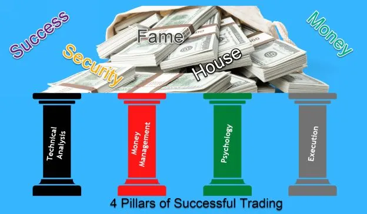

Most traders give more importance only to ‘Technical Analysis’ and ignore the remaining concepts. Please don’t commit such a big blunder. There are 4 pillars to successful trading:

All these concepts are similar to the 4 wheels of a car, and without any one wheel, you will not be able to achieve trading success. Hence, give equal importance to all the concepts to get success in trading.
In simple words, whatever you learned in the previous chapter is a small aspect of technical analysis. Technical Analysis is a method used to predict the future price movement of a stock/index by analysis of the old data in different ways. Technical traders believe current and past price action is the most reliable tool to predict future price movements. They don’t use any fundamental information to make a trading decision.
Technical traders use price charts (the most popular one is candlestick chart), indicators (there are 1000s), and different representations of volume (volume profile, order flow) to analyze the price.
“Even a poor trading system could make money with good money management” – Jack D. Schwager.
Money Management is a set of rules to allocate the required position size to reduce the risk while aiming for good returns in trading. There are many ways, but the right way always focuses on both ‘reducing the losses and ‘maximizing profits.’ Before you pick any money management method, it is essential to ask yourself what type of trader you are. Because one particular method suits positional traders and another method suits intraday traders, scalpers.
I will explain both the techniques, but based on your trading style, pick the method which suits your trading.
For each trade, allocate 10% of your capital. For example, if you have Rs.1,00,000 as your capital, finalize a script XYZ for trading, and let’s assume the CMP of XYZ is Rs.100. Then 10% of your capital is Rs.10,000. So, you can buy 10,000/100 = 100 Shares of XYZ. Using this approach, your entire capital percentage risk per trade varies between 0.5% - 2% (based on how deep your stop-loss is), which is adequate.
Risk only 2% per trade on any trading day. Besides, don't lose more than 5% on any trading day, which means you are not supposed to take more than 2-3 trades on any trading day.
Many traders suggest to risk only 1-2% of your capital even for positional trades, and they don't put an upper cap on the capital. It brings some confusion while taking positional trades.
Let me explain with one example.
Assume your capital is Rs.1,00,000.
You plan to risk 2% of your capital per positional trade, which is Rs.2000/trade.
You had shortlisted a script XYZ – Entry at 1000 and SL at 990.
Then the total number of shares to buy = Rs.2000/10 = 200 shares.
The capital required to buy 200 shares = 200 X Rs.1000 = Rs.2,00,000
But you don't have Rs.2,00,000 capital in your account, do you?
So, the simple way is to deploy only 10% of your capital on one positional trade. Isn't it?
It will solve many problems for positional traders.
This problem may not arise if a trader is planning to take positional trades in futures as leverage will take care of the additional capital requirement (but need to take care of big gap opening risks).
Intraday traders also don't face this issue as most of them take trades in futures or options. In both cases, leverage is available, and it will look after the additional capital requirement.
To put it in simple terms –
Psychology means the mental factors or emotions governing a situation or activity. So, when we say trading psychology, it implies cognitive factors governing trading.
Four major emotions revolving around trading are greed, fear, regret, and hope. Please note, all these factors emerge because of a lack of knowledge.
Developing a compulsive attitude to generate more profits from every trade is greed. We lose money in some trades, we make small profits in a few trades, and only very few trades fetch big profits.
A trader can survive in markets without profits but not without capital. Protecting capital is pivotal, and the next important aspect is consistent profit-making.
Friendly advice - Set process-oriented goals and not monetary goals. Think of protecting capital and surviving in the market for a more extended period.
Most of the fears in your mind are created from your past bad experiences in trading. For example, you are ready to take a breakout trade. But your mind hesitates to pull the trigger which means in the past you have lost money with some breakout trades and your subconscious mind has stored the breakout trading concept with pain. Hence, there is hesitation in your mind.
In some cases, fear also occurs due to your upbringing. For example, if you have absorbed the thought that business is bad while growing up, then you face many difficulties in your trading.
The only way to get rid of fears in trading is by increasing the conviction in trading. You can do this by back testing your system with more data, reading specific niche books on trading, or taking a particular Trading course.
If you have any fears related to your upbringing, then identifying and acknowledging them is the most important step. Then you can use simple methods such as affirmations or practicing gratitude to get rid of these fears. If the issue persists, you can consult a mental coach or hypnotist.
Friendly advice: Plan your trade and trade your plan
In trading, our regrets are never-ending. If you exit a trade and the price keeps moving in a favorable direction, you regret your exit decision. If you don’t take profits from a trade and then the trade takes a turn into the negative zone, a trader will regret his decision for not exiting.
Friendly advice:
A trader starts hoping for some miracle to happen as soon as he deviates from his trading plan.
For example, a trader plans to buy a stock at 100 with 98 as Stop loss level and book profit at 104 level.
The price moved to 100, and he is in the trade.
After some time, the price moves to 104, but he didn’t book profit as he starts hoping that short covering will come into the market anytime and it will take his position to massive profit.
Now the market takes a U-turn. Our stock price moves back to 99, and now he starts to hope for a rebound. Price falls below 98, but he doesn’t book the loss as he thinks a rebound is just around the corner. Price is now 96, and he is still living in the hope of a re-bound.
Friendly advice: Be ready with action points (Stop loss and target) and act as per your trade plan. The market keeps throwing many good opportunities. Please don’t allow any trade to be dependent on hope and then become hopeless.
In 1931, Ted, a pharmacist, and his wife Dorothy, a former teacher, bought a small drug store in the town of Wall, South Dakota, US. They wanted to settle down in a small village that had both a school and a good church. Wall fulfilled these requirements, and hence they started their business in Wall by purchasing a tiny drug store.
Many tourists were traveling across the roads of Wall. However, no one was turning up at their medical shop. Summer season started, and the hopes of Ted and Dorothy began to go down. The main problem was how to attract tourists from the main road into the store.
Ted and Dorothy got an excellent idea. They started serving cold water to anyone who walked into their store. They also put a few signboards on the main road with the route map to the Wall drug store and the availability of the cold water.
With this idea, their business started growing, and today it has its shops all over the world. Today, all the branches of Wall drug store serve cold water to anyone who walks into their shops.
There is no need to look at their overall profits because they spend over $400,000 every year just on billboards!
What is your new idea to bring more discipline to trading? Remember, one idea can change your life!!
Execution is the real Holy Grail in Trading. Suppose you have an excellent positive expectancy system and clear money management rules, in that case, you can make money in trading in the long run, if you execute the plan in all market conditions.